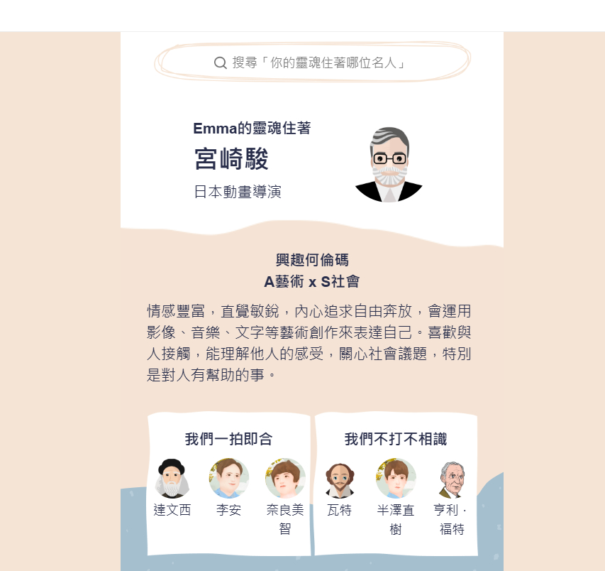
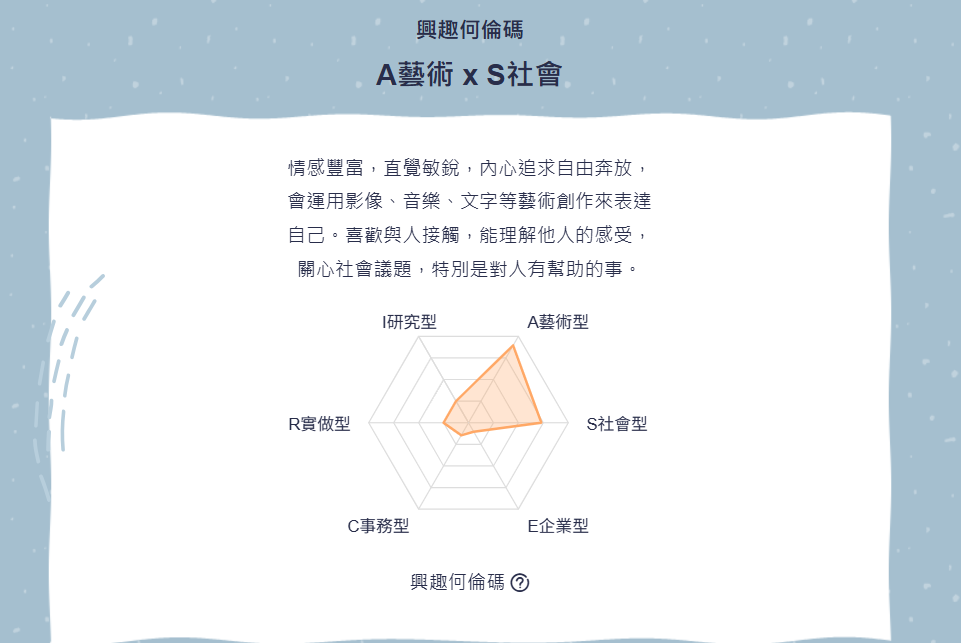

我的職涯網站
這是我的興趣何倫碼測驗結果~ https://guide.104.com.tw/interest/AS 
適合的工作:導演∕導播
工作內容：領導片場人員，電影和電視節目的總指揮！
工作任務：
劇本研究和討論，熟讀所有劇本細節，並依此劇本安排適當的拍攝資源。
拍攝指導：包含演員引導、安排分鏡工作、修改演員走位、道具攝設與攝影位置。
幕後專長資源整合：指導燈光、音效、佈景、視訊、道具、服裝、剪輯等技術性工作。
適合的工作:數位策展人員
工作內容：現在我們要看展覽常要到特定的地方，例如到埃及博物館去看木乃伊特展。但未來會有更多在網路上的「數位策展」，不用出門就可以看盡天下展覽！
工作任務：
數位策展人員也稱作「說故事專家」。
他們擁有創意和執行力，並且喜歡嘗試新事物！他們善於結合社群媒體、廣告行銷、公關企劃的能力，說一個讓大家都喜歡的「有趣故事」！
他們希望自己的想法被聽到，讓世界因他們的想法而更美麗！
媒體公關∕宣傳採買
工作內容：借用媒體力量，把產品特色讓最多人知道！
工作任務：
撰寫新聞稿：依據客戶想對社會大眾說明的議題，撰寫新聞稿。例如：食安危機爆發，某食品企業發表澄清新聞稿。
舉辦媒體活動：替客戶籌辦記者會、媒體活動。例如：新品發佈記者會。
媒體選擇和投放：公關人員依據想要投放廣告的對象，選擇特定的方法或時間。例如：想讓上班族知道某個消息，所以選擇將廣告投放在通勤時間的捷運車廂內；想讓學生知道補習班訊息，所以在學校對面的廣告牆刊登補習班廣告。
*公關常借助媒體的力量，因此要時時掌握媒體風向。適合對於時事、流行趨勢有興趣的同學。
*公關人員撰寫的新聞稿，會經記者和編輯審核後才會發出。
*公關危機處理是公關人員重要，但相對神秘的一個工作任務。
我主要的職涯類型是:A藝術 x S社會，擅長創意發想、內容規劃及與人互動的工作場景 